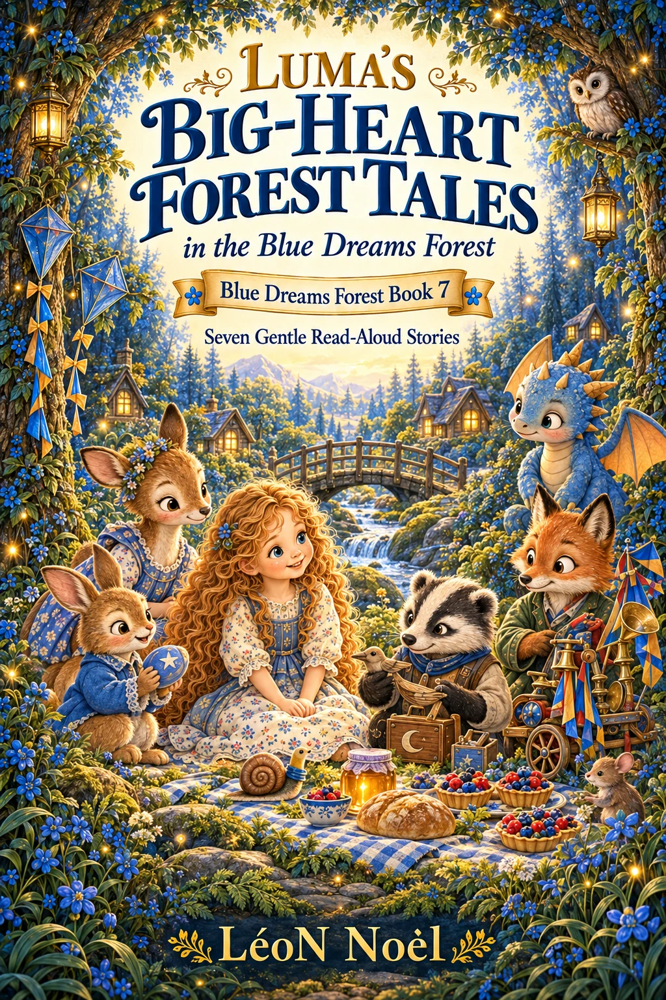

Blue Dreams Forest · Ages 4–8
Luma’s Big-Heart Forest Tales
Seven Gentle Read-Aloud Stories

Inside the book
Feelings, empathy & brave steps
Seven gentle forest stories about frustration, jealousy, disappointment, helping well, courage, anger, and the sometimes-difficult work of saying sorry.
Like the other Blue Dreams Forest volumes, the collection is designed for warm shared reading and gentle conversation rather than turning storytime into a lesson.
Stories in this volume
Seven visits to the Blue Dreams Forest.
- Luma and the Kite That Wouldn't Fly
- Luma and Lina's Prickly Feeling
- Luma and Pip Badger's Ruined Tuesday
- Luma and the Great Cheering-Up Catastrophe
- Luma and the Bridge of Brave Steps
- Luma and the Very Angry Morning
- Luma and the Sorry That Got Stuck
Explore more